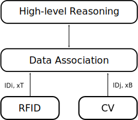

Christoph Feichtenhofer
PhD Student, Graz University of Technology
feichtenhofer _at_ tugraz.at


Research Statement
My research interests are in the fields of computer vision and machine learning, with a focus on learning effective video representations for dynamic scene understanding. In particular, I plan to explore computational theories that represent spatiotemporal visual information, within a confluence of machine vision and learning. I aim to find efficient solutions for problems that are grounded in applications such as video search and retrieval.
Education
Since 2014
Graz University of Technology: PhD Student
Specialization on Learning Effective Spatiotemporal Representations for Recognition in Computer Vision
2012 - 2013
Graz University of Technology: Master's Degree
Thesis: Dynamic Scene Recognition with Oriented Spacetime Energies
03/2013 - 06/2013
York University, Toronto, Canada: Visiting Researcher
Worked with Prof. Richard P. Wildes in the field of Dynamic Scene Recognition
2008 - 2011
Graz University of Technology: Bachelor's Degree
Thesis: No-Reference Sharpness Metric based on Local Gradient Analysis
Publications
Bags of Spacetime Energies for Dynamic Scene Recognition
This paper presents a unified bag of visual word (BoW) framework for dynamic scene recognition. The approach builds on primitive features that uniformly capture spatial and temporal orientation structure of the imagery (e.g., video), as extracted via application of a bank of spatiotemporally oriented filters. Various feature encoding techniques are investigated to abstract the primitives to an intermediate representation that is best suited to dynamic scene representation. Further, a novel approach to adaptive pooling of the encoded features is presented that captures spatial layout of the scene even while being robust to situations where camera motion and scene dynamics are confounded. The resulting overall approach has been evaluated on two standard, publically available dynamic scene datasets. The results show that in comparison to a representative set of alternatives, the proposed approach outperforms the previous state-of-the-art in classification accuracy by 10%.
Christoph Feichtenhofer, Axel Pinz, Richard P. Wildes
in Proc. CVPR 2014

Spacetime Forests with Complementary
Features for Dynamic Scene Recognition
This paper presents spacetime forests defined over complementary spatial and temporal
features for recognition of naturally occurring dynamic scenes. The approach
improves on the previous state-of-the-art in both classification and execution rates. A
particular improvement is with increased robustness to camera motion, where previous
approaches have experienced difficulty. There are three key novelties in the approach.
First, a novel spacetime descriptor is employed that exploits the complementary nature
of spatial and temporal information, as inspired by previous research on the role of orientation
features in scene classification. Second, a forest-based classifier is used to learn
a multi-class representation of the feature distributions. Third, the video is processed in
temporal slices with scale matched preferentially to scene dynamics over camera motion.
Slicing allows for temporal alignment to be handled as latent information in the classifier
and for efficient, incremental processing. The integrated approach is evaluated empirically
on two publically available datasets to document its outstanding performance.
Christoph Feichtenhofer, Axel Pinz, Richard P. Wildes
in Proc. CVPR 2014


Fusing RFID and Computer Vision for Probabilistic Tag Localization
The combination of RFID and computer vision
systems is an effective approach to mitigate the limited tag
localization capabilities of current RFID deployments. In this
paper, we present a hybrid RFID and computer vision system
for localization and tracking of RFID tags. The proposed system
combines the information from the two complementary sensor
modalities in a probabilistic manner and provides a high degree
of flexibility. In addition, we introduce a robust data association
method which is crucial for the application in practical scenarios.
To demonstrate the performance of the proposed system, we
conduct a series of experiments in an article surveillance setup.
This is a frequent application for RFID systems in retail where
previous approaches solely based on RFID localization have
difficulties due to false alarms triggered by stationary tags. Our
evaluation shows that the fusion of RFID and computer vision
provides robustness to false positive observations and allows for
a reliable system operation.
Michael Goller, Christoph Feichtenhofer, Axel Pinz
in Proc. IEEE RFID 2014

Spatio-Temporal Good Features to Track
This paper presents two fundamental contributions that
can be very useful for any autonomous system that requires
point correspondences for visual odometry. First,
the Spatio-Temporal Monitor (STM) is an efficient method
to identify good features to track by monitoring their spatiotemporal
(x-y-t) appearance without any assumptions about
motion or geometry. The STM may be used with any spatial
(x-y) descriptor, but it performs best when combined with
our second contribution, the Histogram of Oriented Magnitudes
(HOM) descriptor, which is based on spatially oriented
multiscale filter magnitudes. To fulfil the real-time requirements
of autonomous applications, the same descriptor
can be used for both, track generation and monitoring,
to identify low-quality feature tracks at virtually no additional
computational cost. Our extensive experimental validation
on a challenging public dataset demonstrates the
excellent performance of STM and HOM, where we significantly
outperform the well known “Good Features to
Track” method and show that our proposed feature quality
measure highly correlates with the accuracy in structure
and motion estimation.
Christoph Feichtenhofer, Axel Pinz
in Proc. CVAD, ICCV 2013

A Perceptual Image Sharpness Metric Based on
Local Edge Gradient Analysis
In this letter, a no-reference perceptual sharpness
metric based on a statistical analysis of local edge gradients is
presented. The method takes properties of the human visual
system into account. Based on perceptual properties, a relation-
ship between the extracted statistical features and the metric
score is established to form a Perceptual Sharpness Index (PSI). A
comparison with state-of-the-art metrics shows that the proposed
method correlates highly with human perception and exhibits low
computational complexity. In contrast to existing metrics, the PSI
performs well for a wide range of blurriness and shows a high
degree of invariance for different image contents.
Christoph Feichtenhofer, Hannes Fassold, Peter Schallauer
in IEEE Signal Processing Letters 2013
Teaching
Image and Video Understanding (together with Prof. Axel Pinz (winter 2014-2015)